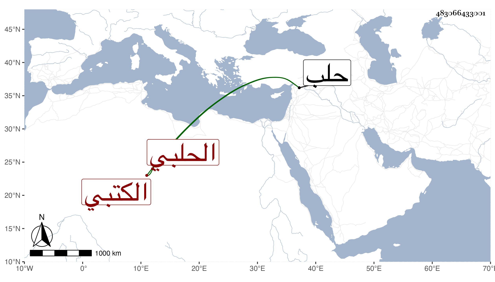

0902Sakhawi.DawLamic.ITO20230111-ara1.EIS1600.483066433001
Biography ID: 483066433001
920
محمد بن إبراهيم بن محمد بن حطاب الشمس أبو العباس الوسط الحلبي الكتبي ويعرف في صغره بالقاضي وربما حذف من نسبه محمد . ولد كما كتبه لي بخطه في ثامن عشر جمادى الأولى سنة سبع وسبعين وسبعمائة بحلب ونشأ بها فحفظ القرآن وصلى به ولم تعلم له صبوة وأحضر في الرابعة على الجمال إبراهيم بن محمد بن عمر بن العديم الموطأ وفي الخامسة على محمد بن محمد بن رباح غالب البخاري وسمع على الشهاب بن المرحل ونسيبه الشرف أبي بكر الحراني والحسين بن عبد الرحمن التكريتي في آخرين وأجاز له الصلاح بن أبي عمر وجماعة كالحراوي وجويرية ، وحدث سمع منه الفضلاء كابن فهد أجاز لي وكان خيرا بارعا في التجليد مع كرم وأخلاق حسنة وعفة زائدة وكذا كان أبوه إنسانا حسنا بيته مأوى الطلبة . مات صاحب الترجمة سنة اثنتين وخمسين أو بعدها رحمه الله .
